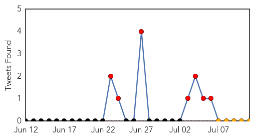
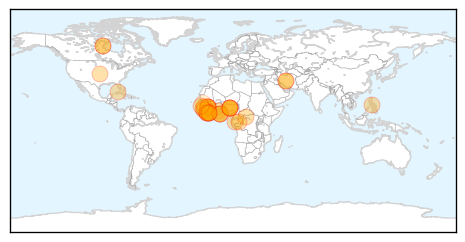

Ebola
30-Day Web Trend
12 alerts, 8 warnings

30-Day Twitter Trend
7 alerts, 0 warnings

Article Locations
Article Confidences

Top Articles:
- 1.000
- West Africa Facing Largest Ebola Outbreak Ever
- 1.000
- WHO Announces that Ebola Death Toll Increases
- 1.000
- Misconceptions fuel spread of Ebola in West Africa
- 1.000
- UN says rumours, fear help Ebola spread
- 1.000
- The Facts Behind A Frightening Virus
- 1.000
- Africa’s ‘unprecedented’ Ebola crisis
- 1.000
- Sierra Leone: Race against time to control the Ebola outbreak
- 1.000
- Ebola epidemic: 'For some, Ebola is akin to magic'
- 1.000
- Surge in Deaths From Virus in Guinea, Liberia and Sierra Leone
- 1.000
- Ebola epidemic unlikely to spread beyond Africa
- 1.000
- Ebola epidemic unprecedented in West Africa, medical aid group says
- 1.000
- West Africa Ebola outbreak nears 900 cases
- 1.000
- 'Race against time' to control ebola outbreak
- 1.000
- Flashcard: Ebola
- 1.000
- Ebola Outbreak Plagues West Africa
- 0.999
- Unicef says misconceptions fuel Ebola outbreak in West Africa
- 0.999
- West Africa Ebola Outbreak Forces Hundreds to be Kept Under Surveillance in Liberia
- 0.999
- More than 500 dead from Ebola in west Africa as virus continues to spread
- 0.999
- WHO warns ebola deaths on the increase
- 0.998
- Ebola aid for West Africa
- 0.998
- Ebola virus in Guinea is a new strain, not imported from other African countries
- 0.998
- Ebola became a matter of belief in Liberia - Liberia
- 0.998
- West Africa Looks To Mobile Technology To Help Stop Ebola
- 0.997
- Tests rule out Ebola in case of sick Saskatchewan man, say health officials
- 0.997
- Ebola deaths surge in Sierra Leone and Liberia - WHO
- 0.994
- Ebola Outbreak Provokes Shift in Attitudes Towards Health Care and Burial Rituals in Sierra Leone
- 0.990
- Misconceptions fuel Ebola outbreak in west Africa: UNICEF
- 0.988
- Ministries of health, Agriculture, Interior Partner on Ebola Virus
- 0.980
- Police: Essex shooting victim targeted, robbed
- 0.980
- Influx of child migrants demands immediate U.S. response
- 0.946
- ECOWAS leaders set up fund to deal with the Ebola
- 0.910
- ECOWAS summit dominates Ghanaian media
- 0.900
- MOH Puts 433 Persons under Surveillance
- 0.877
- President Koroma Attends 45th ECOWAS Summit
- 0.603
- NP supports EBOLA fight « Awoko Newspaper
- 0.602
- ECOWAS leaders establish solidarity fund for Ebola
- 0.511
- Minister challenges doctors to public debate over strike
Top Tweets:
-
No tweets found for Jul 11, 2014
Unknown
30-Day Web Trend
1 alerts, 0 warnings

30-Day Twitter Trend
0 alerts, 0 warnings

Article Locations

Article Confidences

Top Articles:
- 0.999
- World Health Organization says spread of MERS virus isn't yet a worldwide health emergency
- 0.999
- Lebanon records its first case of potentially fatal Middle East respiratory virus
- 0.997
- Saudi MERS data review shows 50 pct jump in number of deaths
- 0.997
- WHO, experts raise questions about newly revealed Saudi MERS cases
- 0.997
- Asia should stay vigilant against MERS: WHO
- 0.996
- 2 Orlando hospital workers who had contact with MERS-infected man negative for virus
- 0.991
- MERS unlikely to spread in Asia: WHO expert
- 0.989
- Doctor exposed to Florida MERS case in Canada; he tests negative for virus
- 0.979
- Doctor exposed to MERS in Florida hospital remained healthy, left Canada
- 0.978
- Quebec confirms case of deadly pig virus; farm put under quarantine
- 0.976
- Florida health care workers test negative for MERS after exposure to 2nd confirmed US case
- 0.976
- Prince Edward Island government confirms first case of pig virus
- 0.965
- Federal panel says nasal spray should be first choice against flu for kids ages 2 to 8
- 0.960
- First case of deadly pig virus reported in Quebec
- 0.948
- Manitoba has first case of pig virus; no risk to humans, other animals
- 0.945
- Fifth case of deadly pig virus confirmed on Ontario farm as outbreak spreads
- 0.939
- Health officials confirm Texas death as 4th US case of mad cow-related disease
- 0.937
- Pig virus fears has P.E.I. pork producers on high alert
- 0.926
- Teenager Jessica Livings Says She Caught TB From Her Kitten
- 0.917
- Chicago Tribune
- 0.917
- Chicago Tribune
- 0.917
- Chicago Tribune
- 0.917
- Chicago Tribune
- 0.917
- Chicago Tribune
- 0.917
- Chicago Tribune
- 0.917
- Chicago Tribune
- 0.917
- Chicago Tribune
- 0.917
- Chicago Tribune
- 0.917
- Chicago Tribune
- 0.917
- Chicago Tribune
- 0.917
- Chicago Tribune
- 0.917
- Chicago Tribune
- 0.917
- Chicago Tribune
- 0.910
- The world windows to Thailand
- 0.887
- Tests confirm fourth case of deadly pig virus in Ontario
- 0.876
- Orlando Health says all workers exposed to MERS patient have been cleared to return to work
- 0.870
- Silent CMV virus a rare, dangerous risk for unborn; efforts mount to test and raise awareness
- 0.868
- Lab tests show norovirus to blame for outbreak on cruise ship that sickened nearly 700
- 0.866
- Kurdish peshmerga forces take over two Kirkuk oilfields
- 0.866
- Iraq's top Shi'ite cleric Sistani calls on fighters to respect all people's rights
- 0.866
- Several injured in explosion in western Turkish city
- 0.842
- Ninth encephalitis case confirmed
- 0.834
- Countries prepare to debate destroying last smallpox stocks; scientists urge delay
- 0.831
- Nova Scotia's final shipment of flu vaccine to address pharmacy shortages
- 0.828
- Premature Baby Dies At St Thomas' Hospital, 15 Others Infected, After NHS Drip 'Contaminated'
- 0.826
- 9-year-old girl dies from brain-eating amoeba after swimming in lake
- 0.823
- Deadly Pig Virus Confirmed In Canada
- 0.799
- Anthrax Scare Reveals More US Lab Safety Problems
- 0.797
- HIV found in baby once thought cured
- 0.794
- Deadly pig virus case confirmed in Ontario
Showing top 50 articles...
Top Tweets:
- 0.754
- Flu Fact Friday: Complications of flu can include bacterial pneumonia ear infections sinus infections and dehydration